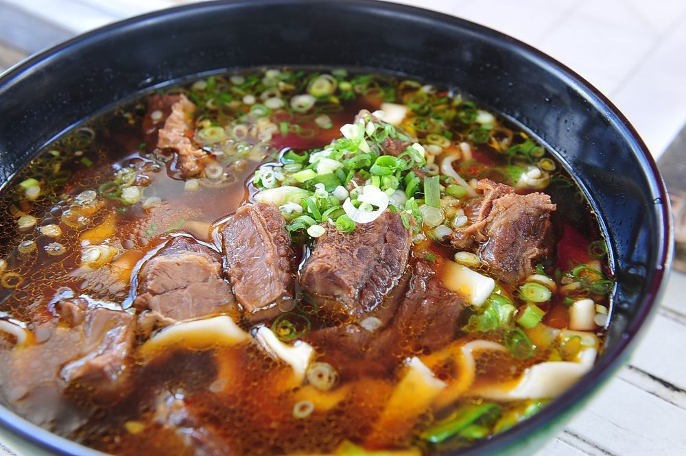
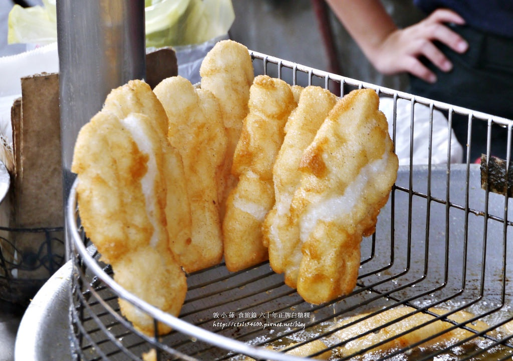
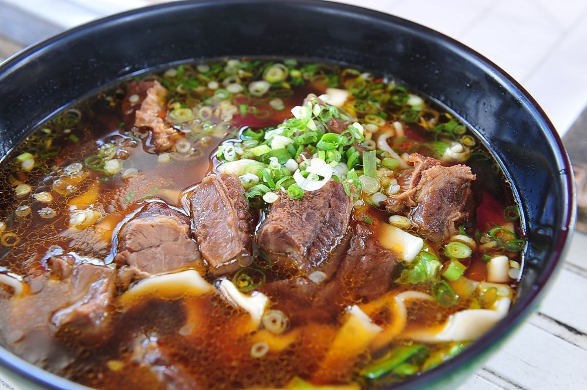
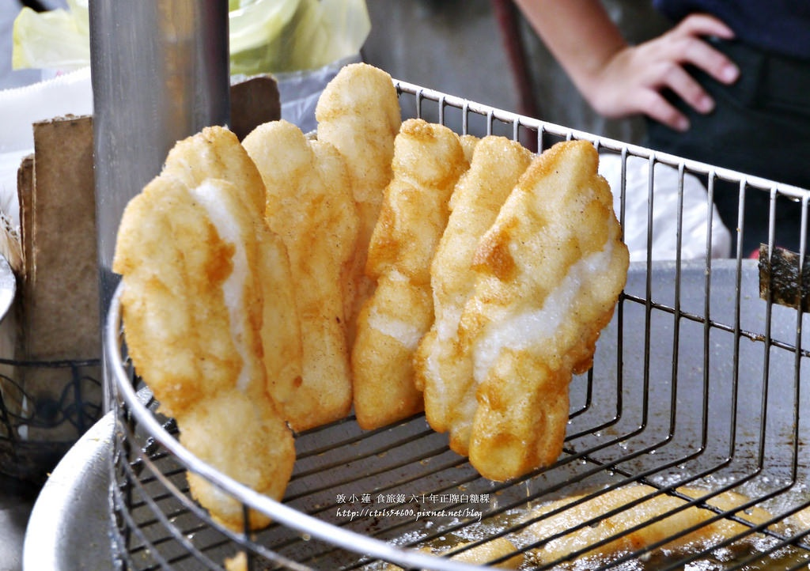
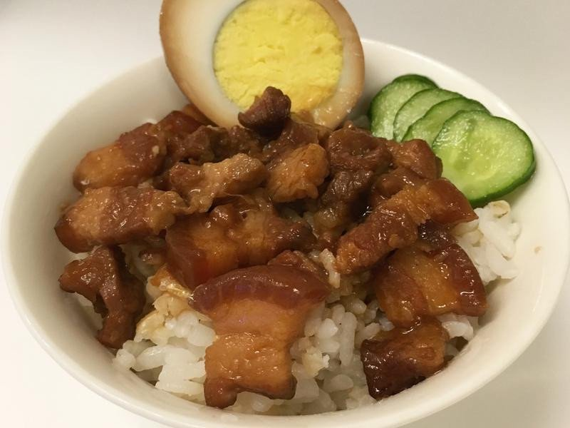
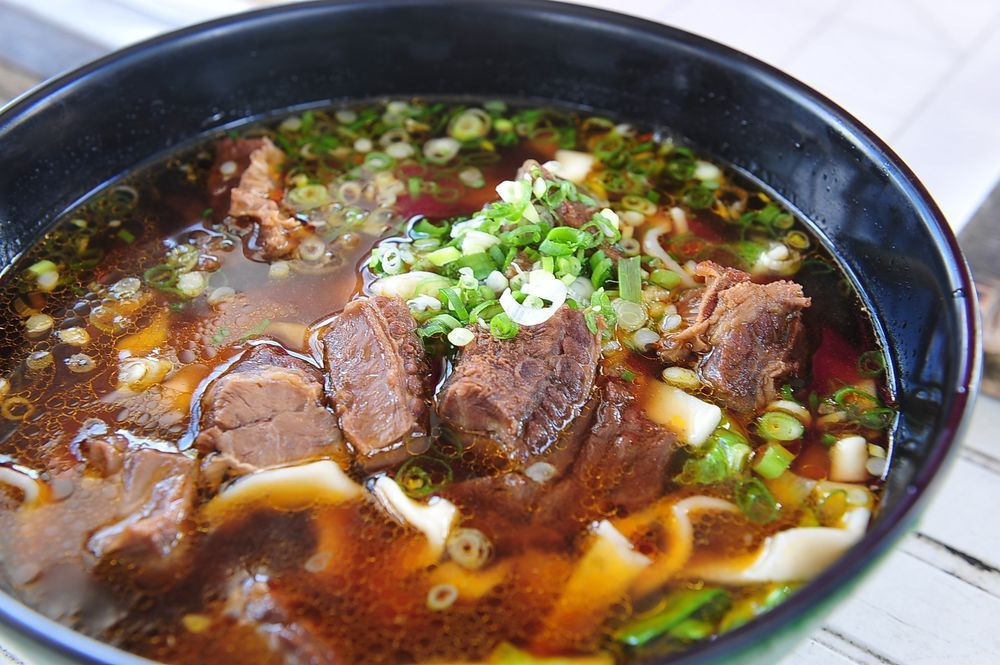
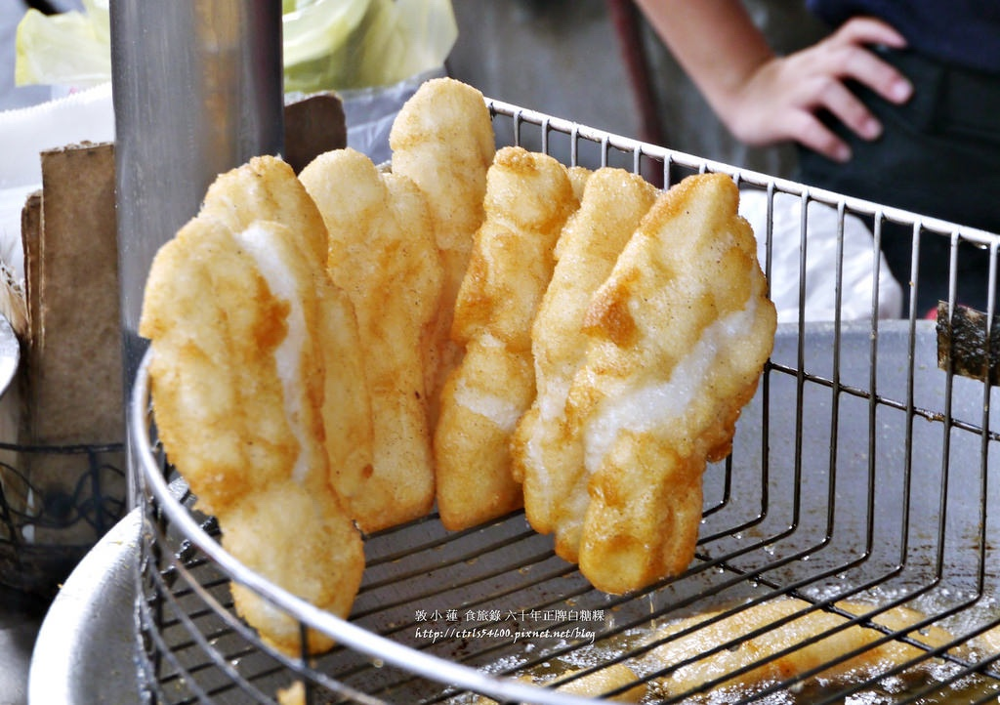

對於台灣人而言，吃是一種藝術，也是一種文化表現，尤其台灣特殊的歷史背景，使得飲食文化更加多元化，不僅各系的中華菜餚在此發揚光大，更匯集來自全球各地的精緻飲食，包括美國、歐洲、
義大利、亞洲熱帶地區、地中海等世界美食，皆可以在台灣吃到。因此，台灣可說是一個世界料理的共和國。談起中華美食，源遠流長，匯集數千年的烹調智慧及經驗，與悠久的歷史薰陶，講究色、
香、味、形俱全，能將平凡無奇的食材製作成精緻的佳餚，因此中華美食聞名全球，令世界各地的老饕為之風靡。台灣菜：注重自然原味，以清淡、新鮮為最主要的，調味不求繁複，『清、淡、鮮、醇』
為烹調重點。並且受荷蘭、日本等國家影響，接受生食與清燙食物。在台灣，到處都可以吃到小吃，尤其是夜市，是台灣非常特殊的文化，充斥琳瑯滿目的小吃美食，每個夜市都有不同的特色與風味。
周休二日帶動休閒生活漸漸普及的同時，這些散佈在各地方不論是鄉鎮、夜市、市場、學校附近的小吃，已經漸漸成為國內休閒，甚至外國遊客體驗台灣當地美食的重要旅遊點，而這些小吃不論是賣什麼
，都代表屬於當地特有的美食文化
台灣以優厚的條件，集結中國各地廚藝大成，不僅融會貫通中國不同風味的地方菜餚，並且從傳統廚藝中不斷推陳出新，因此台灣每年皆吸引許多觀光客來台品嚐中華美食
小吃，為什麼會受到大家的喜愛和支持？台灣小吃總是不斷的有新的變化，加上獨特的口味讓人驚喜不已